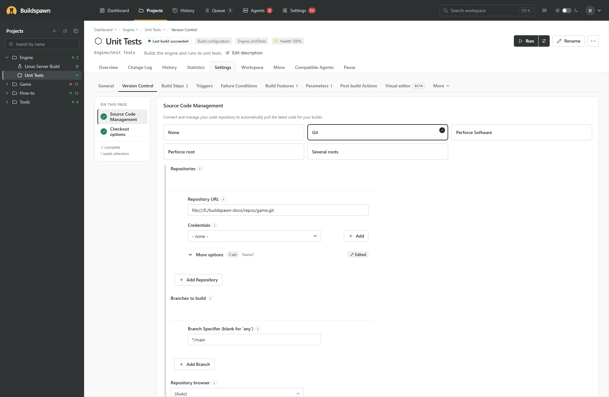

Git
Connect a Git repository to a build configuration, so each build checks out the code and lists what changed.
A root (or VCS root) is one repository a build configuration checks out. Git support is built into Buildspawn: you don't need to install anything on the server. Agents need the git command.
When to use it
Use Git when the code of the build configuration lives in a Git repository.
How to set it up
- Open the build configuration and go to Settings › Version Control.
- Choose Git.
- Type the Repository URL, for example
https://git.studio.example/skyforge/engine.gitorgit@git.studio.example:skyforge/engine.git. - Pick the Credentials to use, or add new ones. Public repositories need none.
- Under Branches to build, type the branch, for example
*/main. - Click Save.

main branch of a Git repository.The next build checks out the code into its checkout directory on the agent. The build page shows the commit it built, and the Change Log tab lists the new commits since the last build.
To build when someone pushes, add a version control trigger.
Several roots
A build configuration can check out more than one root, for example a game repository and a tools repository, or Git and Perforce together. See Several roots.
Branches
Branches to build decides what a build checks out:
| You type | What it builds |
|---|---|
*/main | The main branch. |
*/release/* | Any branch under release/. A trigger builds the one that changed. |
refs/tags/v1.4 | One tag. |
The branch a build used is in %build.branch% and in the build's info line.
Build another branch once
You don't need to change the settings to build a different commit, tag or branch once. Use Re-run with changes and choose the revision in the Source row of the root.
Templates and shared roots
A template can hold roots too. Build configurations that use the template get its roots. Template roots always check out into a directory of their own, so they never clash with the build configuration's roots.
Every field
| Field | What it does | Default | Example |
|---|---|---|---|
| Repositories › Repository URL | Where the code is. Add more with Add Repository. | git@git.studio.example:skyforge/engine.git | |
| Credentials | An SSH key or access token. Public repositories need none. | None | git-buildbot |
| Name and Refspec (advanced) | The remote's name, and which refs to fetch. | origin | +refs/heads/*:refs/remotes/origin/* |
| Branches to build › Branch Specifier | What to build. Add more with Add Branch. One branch per build configuration works best: with many, the changes between branches can be wrong. | */master | */main |
| Git executable | Which Git to use, when more than one is set up under Tools. | Default | |
| Additional Behaviours | Extra options, listed below. | None |
Additional Behaviours
Click Add under Additional Behaviours and choose:
| Behaviour | What it does |
|---|---|
| Clean before checkout | Deletes untracked files (also those in .gitignore) and resets tracked files before every checkout. |
| Clean after checkout | The same, after the checkout. |
| Wipe out repository & force clone | Empties the workspace before building. |
| Advanced clone behaviours | Shallow clone depth, tags, timeouts and reference repositories. A shallow clone saves time but lists every file as changed in the first changes. |
| Advanced checkout behaviours | The checkout timeout in minutes (default 10). |
| Advanced sub-modules behaviours | Update submodules, recursive, shallow, with parent credentials. |
| Git LFS pull after checkout | Pulls large files after the checkout. Needs git lfs on the server and every agent. Good for game assets. |
| Check out to a sub-directory | A folder under the workspace for the repository. |
| Check out to specific local branch | Checks out the revision as a local branch of this name. Empty or ** uses the remote branch name. |
| Sparse checkout paths | Only these paths are checked out. |
| Merge before build | Merges a branch into the build's branch first, for example an integration branch into master. |
| Calculate changelog against a specific branch | Lists changes against that branch. |
| First build changelog | The first build lists the latest commit, so Pipelines can look at changes. |
| Use commit author in changelog | Uses the author, not the committer. |
| Strategy for choosing what to build | How the branches are chosen and ordered. |
| Build single revision only | Builds one of several candidate revisions. |
| Force polling using workspace | Polls with a workspace, not git ls-remote. |
| Polling ignores commits with certain messages, ...in certain paths, ...from certain users | Commits that match do not start a build. Use them to ignore the build's own commits. Path filters turn off fast polling. |
| Don't trigger a build on commit notifications | Ignores this repository when a commit notification arrives. |
| Create a tag for every build | Tags the built commit in the workspace. |
| Prune stale remote-tracking branches, Prune stale tags | Removes branches and tags the remote no longer has. |
| Custom user name/e-mail address | Sets the author and committer of commits the build makes. |
| Custom SCM name | A unique name for this root. |
A worked example
The Skyforge tools repository has Repository URL git@git.studio.example:skyforge/tools.git, Credentials an SSH key, Branch Specifier */main and the behaviours Git LFS pull after checkout and Polling ignores commits from certain users (buildbot).
What you see when it runs
The log shows the fetch and checkout of the commit. The build page shows the commit and branch, and the Change Log tab lists new commits.
Problems and fixes
| You see | What to do |
|---|---|
| Authentication failed | Check the Credentials. An SSH key needs the matching public key on the Git host. |
| The checkout times out | Add Advanced checkout behaviours with a longer timeout, or a shallow clone. |
| Changes look wrong between branches | Build one branch per build configuration. |
git not found | Install Git on the agent. |
Tips
- Use SSH keys or access tokens as credentials, not your own password.
- Keep large binary assets out of Git, or use Git LFS. For big game content, Perforce is often the better fit.
- Keep the build configuration's settings next to the code with versioned settings.